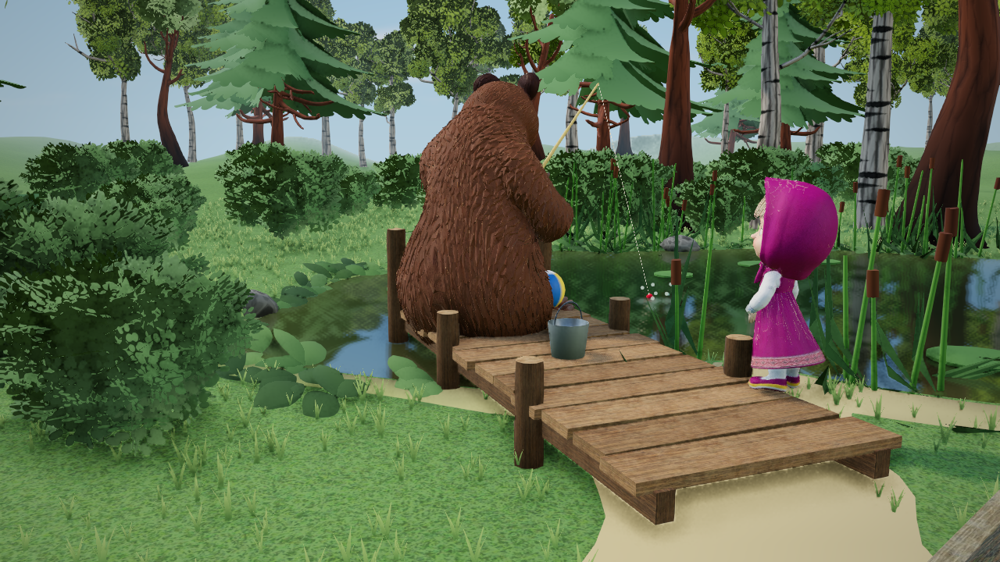
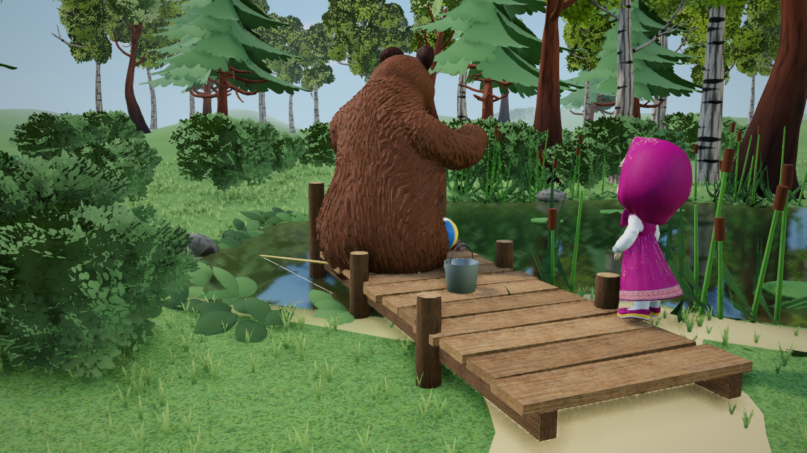
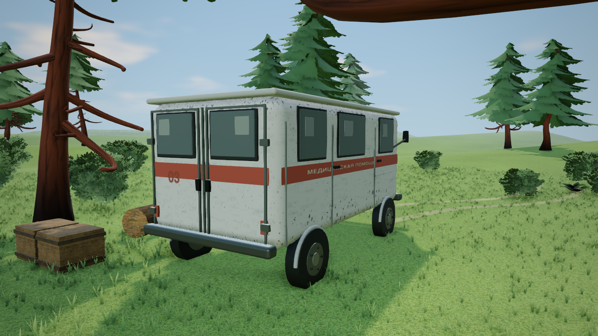
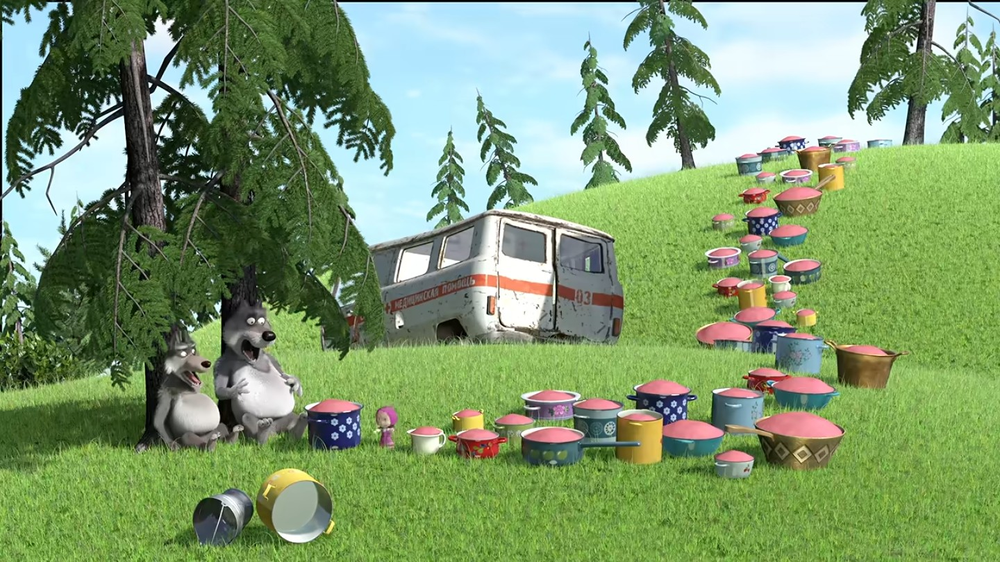

Ranked across the game
Proposed work order. These corrections have not been implemented.
| # | Priority | Concrete problem | Proof needed before moving on |
|---|---|---|---|
| 1 | StagingAcross stories | Foreground geometry hides the performance | Faces, acting hands and important props remain readable through the shot. |
| 2 | Staging / contactBear’s nap | Bear stands inside the hammock | A complete wake-up and dismount reaches clear ground. |
| 3 | Paired actionPancake morning | Hug and release leave bodies intersecting | Clear approach, supported embrace and separated release from two angles. |
| 4 | Staging / proportionsMasha at the table | Work surface hides the cook and her pan | Face, pan, both hands and support fit one coherent work position. |
| 5 | Staging / propsFishing trip | Catch is obscured; rod jumps to a poor resting pose | A continuous, readable cast → catch → rod placement sequence. |
| 6 | Place compositionPond and ambulance clearing | Dock dominates the pond; van sits on a flat patch | Approve shore/bench and slope/tree/vehicle blockouts beside source frames. |
| 7 | Recognizable shapesShared outdoor assets | Box-like van, sheet-like conifers and dome-shaped crops | Approve a small family of plain-material silhouettes at story distance. |
| 8 | TexturesAfter layout and shapes | Ground, wood, foliage and van wear have competing detail scales | One consistent daylight comparison with restrained surface contrast. |
Recommended first pass: camera visibility, hammock dismount and the hug. Then Masha’s work position and one complete fishing sequence. Recheck the same beats before expanding asset work.
The camera hides the performance
Observed in actual story framing, with both character and scenery occlusion.


ObservedScenery and nearby actors obscure the intended action. The fishing review also found a bush blocking a later reaction.
Proposed next fixCheck each location’s occluders and moving actor volumes when choosing and clearing shots.
Pass conditionPlay the complete shot: the intended face, acting hands and key prop remain readable without accidental body crops.


Give the hammock a real exit
The comic wake-up needs a physical transition from support to clear ground.


ObservedThe intersection persists in samples at 24.5, 27.5 and 30.5 s. Bear stands in the resting area.
Proposed next fixAuthor entry, sleeping support and dismount positions; move onto clear ground before standing gestures.
Pass conditionSleeping → waking → standing clears the cloth, trunks and branches in both the story view and a side view.


Solve the hug as one paired action
Body spacing and release matter before finger or facial polish.


ObservedThe side check shows body penetration during the hug; the production shot still conceals Masha after both hug clips end.
Proposed next fixCoordinate approach distance, Bear’s lean, shoulder/back hand targets and a clear release position.
Pass conditionApproach, embrace and separation all read from front and side, without treating root distance alone as collision proof.

Stage a work surface Masha can use
A correct hand grip is only one part of a believable cooking pose.


ObservedThe actor, table height, pose and framing do not form a coherent cooking station.
Proposed next fixGive Masha a stable step or an actor-specific work position and pose, while preserving useful table scale for Bear.
Pass conditionFace, working hands, pan, surface and footing are readable together throughout the cooking beat.

Make the catch—and the rod placement—read
One complete fishing sequence is a useful test of camera, contacts and set layout together.




ObservedAt 21 s, the action still reports fish, while the held object changes to the fish and the rod moves to a resting position. The placement is visually awkward.
Proposed next fixChoose a three-quarter angle showing face, hands and float. Make the rod-to-catch transition and resting location explicit.
Pass conditionReview an uninterrupted cast, bite, catch and rod placement. Recheck the shoreline layout before polishing water or planks.


Approve the place and silhouette before wear
The ambulance clearing is a clear example of the layout → shape → surface order.




Observed / source boundaryThe flat staging and box-like form are visible. The source supports a slope and rear/side silhouette; it does not establish measured dimensions or an exact front grille.
Proposed next fixBlock slope, tree, van and actor space together. Then refine roof/body/window proportions. Apply the same silhouette review to conifers, shrubs and garden crops.
Pass conditionApprove plain-material views beside the source first. Then test quieter ground, restrained wood contrast, glazing depth and localized wear in consistent daylight.


What this evidence does—and does not—establish
Observed
The story audit sampled 77 production-camera frames across five English sample stories, followed by targeted contact checks. Outdoor captures use the current game compiler, evaluator, assets and stage. No browser errors were reported in the documented initial capture runs.
Story camera means normal compiled framing. Diagnostic camera changes only the view for inspection. Cartoon source is a saved official-episode frame, not a matched-camera reconstruction.
Still unverified
Sampled images do not certify continuous animation, audio, performance, mobile behavior, every contact or a live deployment. Precise landscape dimensions and unseen room/shore geometry remain inferred.
The apparent shoulder-carry “floating” issue was not confirmed by the reverse view and is excluded. The new interior study is separate. This audit made no game fixes, paid generations or deployment.